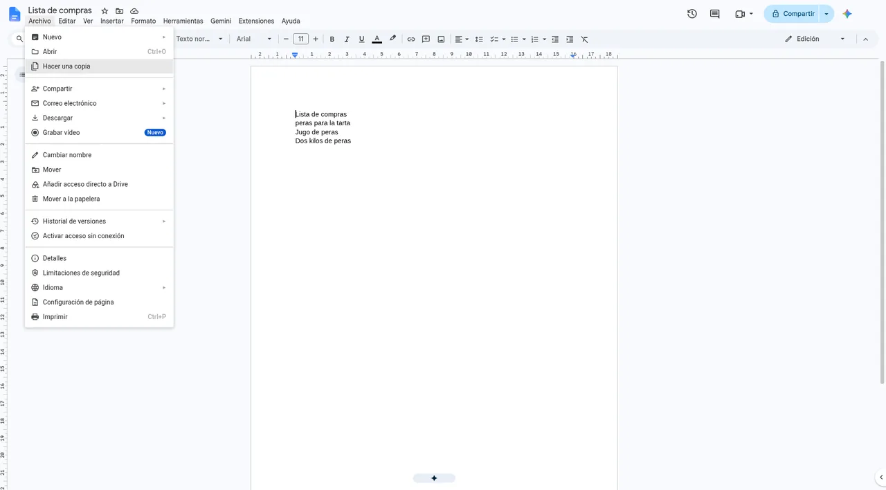
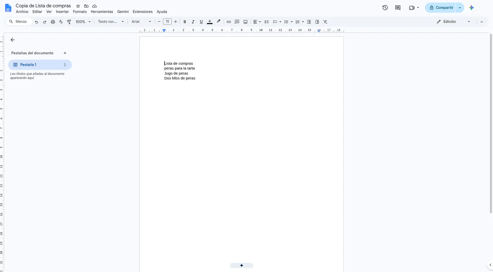
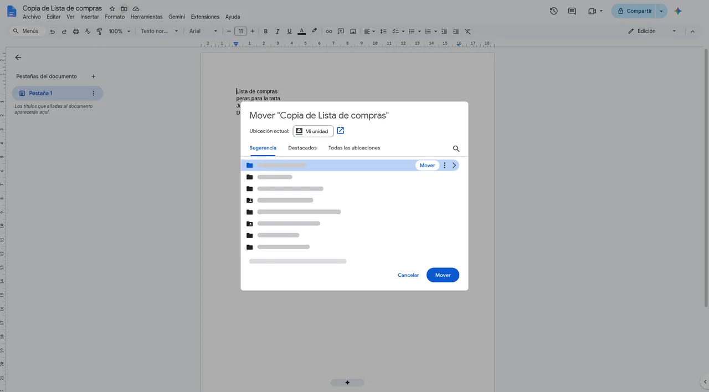
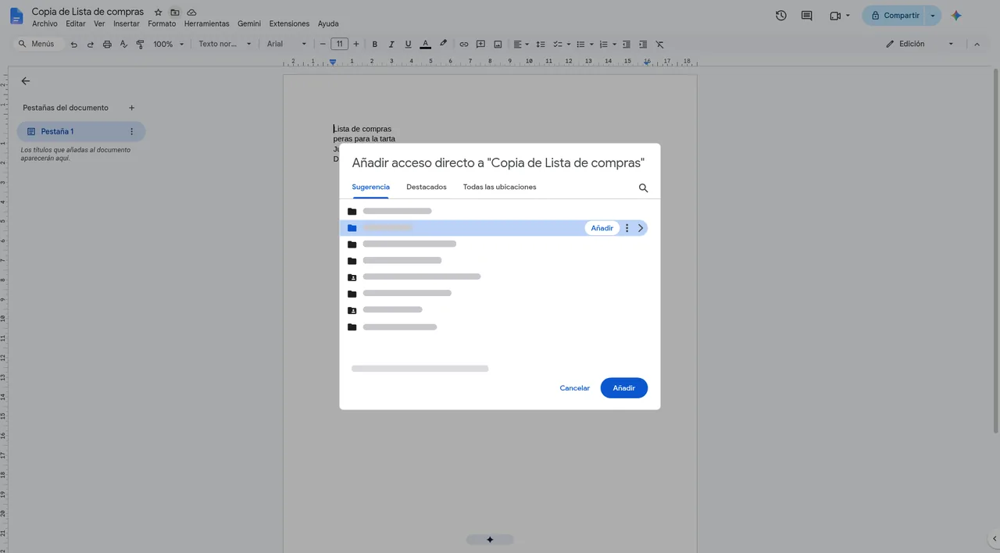
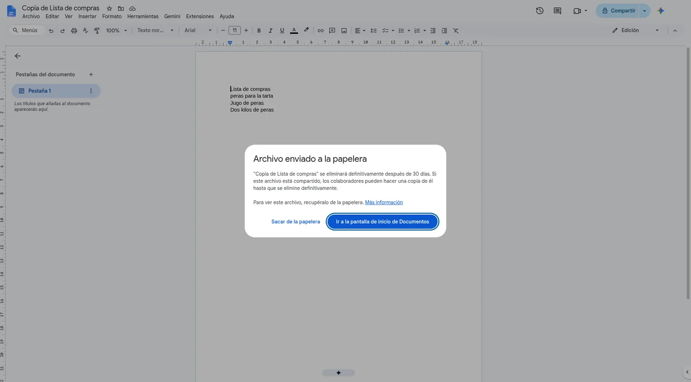

Curso de Google Documentos › Archivo › Lección 3
Lección 3 de 53 · menú Archivo
Cómo hacer una copia, mover y borrar un Google Doc
Fecha del video: · Programado
¿Querés duplicar, mover o borrar un documento? En Google Docs todo está en el menú Archivo.
En el ejemplo usamos una copia de prueba de «Lista de compras».
Paso 1: hacé una copia
Andá a Archivo → Hacer una copia. Poné un nombre, elegí la carpeta y tocá «Hacer una copia». Se abre un documento nuevo, igual al original.



Paso 2: movelo o poné un acceso directo
Para cambiarlo de carpeta, andá a Archivo → Mover, elegí la carpeta y tocá «Mover».

Si lo querés ver también en otra carpeta, sin sacarlo de donde está, usá Archivo → Añadir acceso directo a Drive, elegí dónde y tocá «Añadir».

Paso 3: movelo a la papelera (y recuperalo si hace falta)
Andá a Archivo → Mover a la papelera. El archivo se elimina definitivamente a los 30 días. ¿Te arrepentiste? En el aviso tocá «Sacar de la papelera».

Mirá el Short
Estreno del Short: 22/11/2026 · 17:00 (hora Argentina)
Video relacionado: Google Docs: menú Archivo paso a paso (tutorial completo) — el video largo del menú Archivo (verlo en YouTube).
Fuente oficial: Ayuda de Editores de Documentos de Google. Capturas propias en un documento de ejemplo («Lista de compras»). El video usa voz generada con IA.